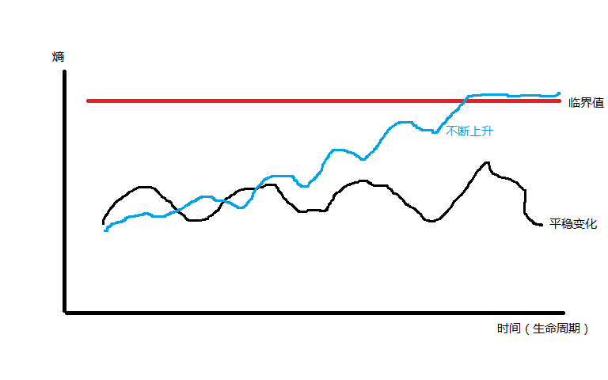

架构的焦点

在真正把一个需求、一种想法变成代码之前，有一个过程称之为设计。
一些经验丰富的程序员执行这个设计过程，我们称其为架构，与之对应的程序员身份也就成了架构师。
架构始于需求过程之后，描述系统的抽象构成，在系统抽象构成与现实的物理技术世界之间建立映射。
建立映射的过程其实就是我们常经历的技术选型过程。
在我过去经历的大部分 java web 项目中，技术选型基本就是框架的选择，大部分项目都使用了一些主流的开源框架来实现。
java 中各种开源通用框架的成熟度和使用广泛度都很高，看上去让选择变的简单，架构的技术选型变得更容易了。
其实不然，正是因为各种流行框架的通用和功能覆盖广，选择仅仅是被后移了，焦点不在用什么而是怎么用。
技术选型的落地，才是后续物理设计的开始。
物理设计从结构开始，包括三个方面：模块结构、数据结构、代码结构。
模块结构是为分治与协作而设计。
模块首先表达了系统抽象构成，一个系统如果整体过于复杂，就通过模块划分来达到分治。
复杂的系统将被拆分为边界清晰的模块，单一模块的复杂度将控制在可接受的范围内。
不同的模块可以分由不同的团队成员来完成，只需界定好模块之间的交互关系。
Linus Torvalds 说：“好程序员关心数据结构”。
数据结构是为功能实现而设计，这看起来像是开发过程层面才应考虑的事情？
其实不然，数据结构直接影响代码实现，好的数据结构产生更少更好的代码。
如果不在架构过程去考虑，而推后到开发过程，必然失去全局性和整体性。
代码结构是为维护和演进而设计。
不关心代码设计的架构，很容易成为空中楼阁。
过去经历的很多项目，架构的工作只做到模块层面，但真正的系统实现出来都与架构的愿景相去甚远。
架构文档上清晰的模块边界，交互过程，反应到代码上都变成了一团乱麻，剪不断理还乱。
软件系统不会随着时间推移而耗损腐坏，它只会因为变化而腐坏。
一开始清晰整洁的架构和实现随着需求的变化而不断变得浑浊、混乱。
借用一个物理学的术语“熵”，它表达体系的混乱程度，那么软件系统的熵总是随着每次变化而变得更高。
模块清晰、结构良好、代码整洁无不是为控制“熵”这一目标，需求变化带来的变动总是带来软件系统“熵”值的增长。
软件系统熵有个临界值，当达到并超过临界值后，软件系统的生命也基本到头了。
这时我们爱采取的一个行动就是干脆推倒重来吧，重写一个新的吧。
下图示例了软件系统熵值的生命周期变化。

架构始于系统生命之初，并伴随系统生命周期全程。
每次需求变化带来的变动都应进行一次或大或小的重新架构过程。
架构的焦点在于控制软件系统变动时熵值的变化。
架构的本质让我想起一句软件开发箴言：“少写代码”。
更少的代码，更少的熵。